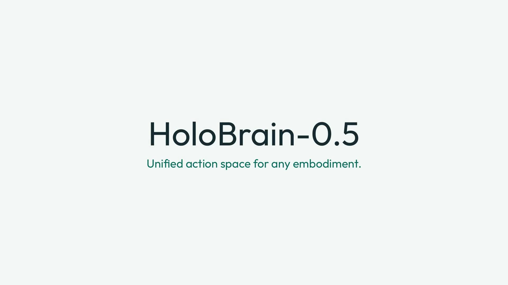
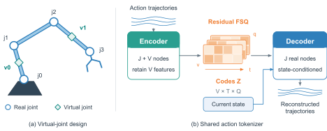

HoloBrain-0.5
Manipulation across embodiments.
Continuous and discrete policies plan motion in a shared 3D action space using the robot state, its kinematic graph, and calibrated camera observations.
Horizon Robotics HoloBrain Team

Demonstrations
A label in the upper-left corner shows the speed multiplier for sped-up footage. Unlabeled footage plays at its original speed. Scroll or swipe horizontally to browse the demonstration videos.
Bimanual Dexterity with AgileX Piper and Piper-X
1 / 30
Phone packaging
02Gear assembly
03Putting on a pillowcase
04Folding a long-sleeved shirt
05Zip-tie fastening
06Apply parcel labels
07Paper box folding
08T-shirt folding
09Put the shirt onto the hanger.
10Shorts folding
11Pouring pellets and returning the test tube
12Pairing socks
13Refilling a dry food container
14Objects into a basket
15Objects into a zippered bag
16Objects into a cabinet
17Objects into a drawer
18Bottle-cap manipulation
19Sweeping trash
20Utensil storage
21Test-tube storage
22Pen into a holder
23Objects into a microwave
24Pairing and storing shoes
25Rolling a rug
26Orienting a test tube label
27Organizing medicine
28Wiping a whiteboard
29Packing a takeout order
30Demonstrations Across Highly Diverse Embodiments
1 / 8
G1: Retrieve a drink from the fridge
01G1: Carry a laundry bag to the table and return
02G1: Hand a laundry bag to a person
03Mobile dual-arm: Press an elevator button
04Mobile dual-arm: Place a bag on a cabinet
05Mobile dual-arm: Hang a garment on a rack
06Tianji + Wuji2 Hands: Ironing and Folding Clothes
07Franka: Post-trained on the public DROID dataset without data from the target environment or task
08Method
A canonical embodiment representation connects heterogeneous training data to continuous and discrete action generation.
Canonical embodiment representation
URDF standardization aligns joint axes and end-effector conventions while preserving physical motion. Both policies encode the standardized kinematic graph. Four robot configurations · Additional joint graphs.
Continuous & discrete actions
The continuous variant uses diffusion. The discrete variant combines virtual-joint aggregation, residual finite scalar quantization, and delayed autoregressive generation.
Geometrically aligned data
Pretraining spans 15 embodiment categories with calibrated camera geometry: 5,704.3 hours of real-robot data, 3,470.3 hours of simulation, and 831.9 hours of human demonstrations.
Joint and tool-center-point standardization

Attached-transform compensation preserves the robot’s physical geometry and trajectories as model-facing frame conventions change.
Morphology-aware action tokenization

Virtual nodes summarize trajectories on the kinematic graph. A shared tokenizer maps embodiment-dependent node counts to a categorical code space.
Results
Simulation performance throughout pretraining and task-averaged progress scores on real robots. Choose an evaluation setting to explore the results.
Pretraining performance
Mean simulation success rate (%)Each model checkpoint is evaluated over 21,430 episodes in total across six simulation settings spanning three simulators. The curve reports the unweighted mean of the six setting-specific success rates.

Figure 11 from the technical report. D-Init. denotes the continuous model initialized from the discrete model.
Real-robot progress scores give partial credit for task milestones; they are distinct from the simulation success rates shown in the pretraining curve. See the report for task-level results and scoring details.
Resources & citation
Citation
@techreport{lin2026holobrain05,
title = {HoloBrain-0.5 Technical Report},
author = {Xuewu Lin and Jiahao Wang and Jiawei Li and Mengdi Li and Zhengmao Sun and Yiwei Jin and Hongyu Xie and Zhengyang Feng and Kun Wu and Zihao Chen and Lianzhou Zhang and Lichao Huang and Zhizhong Su},
institution = {Horizon Robotics},
year = {2026}
}